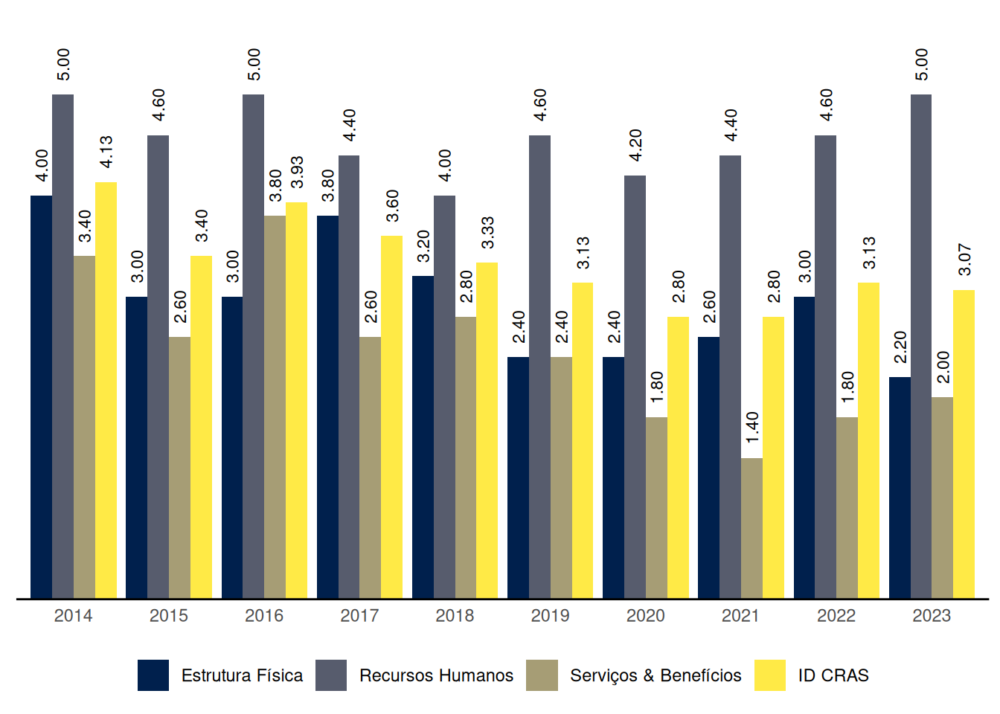
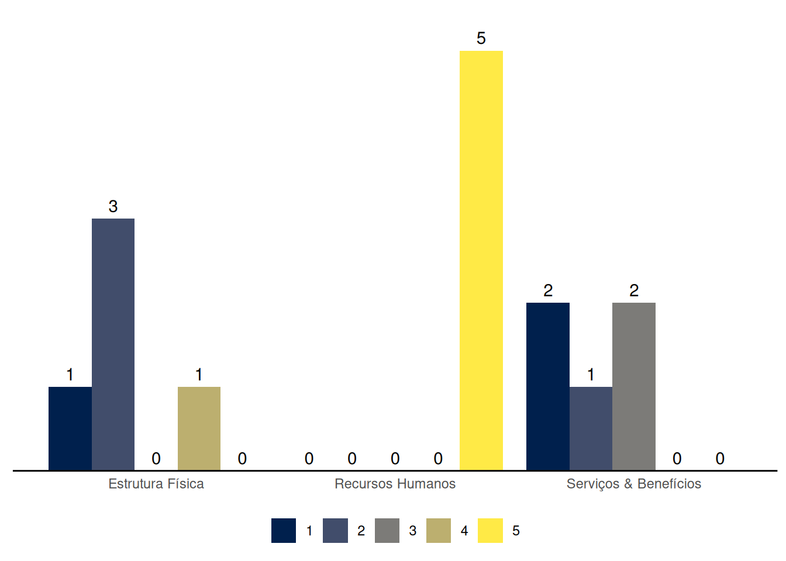
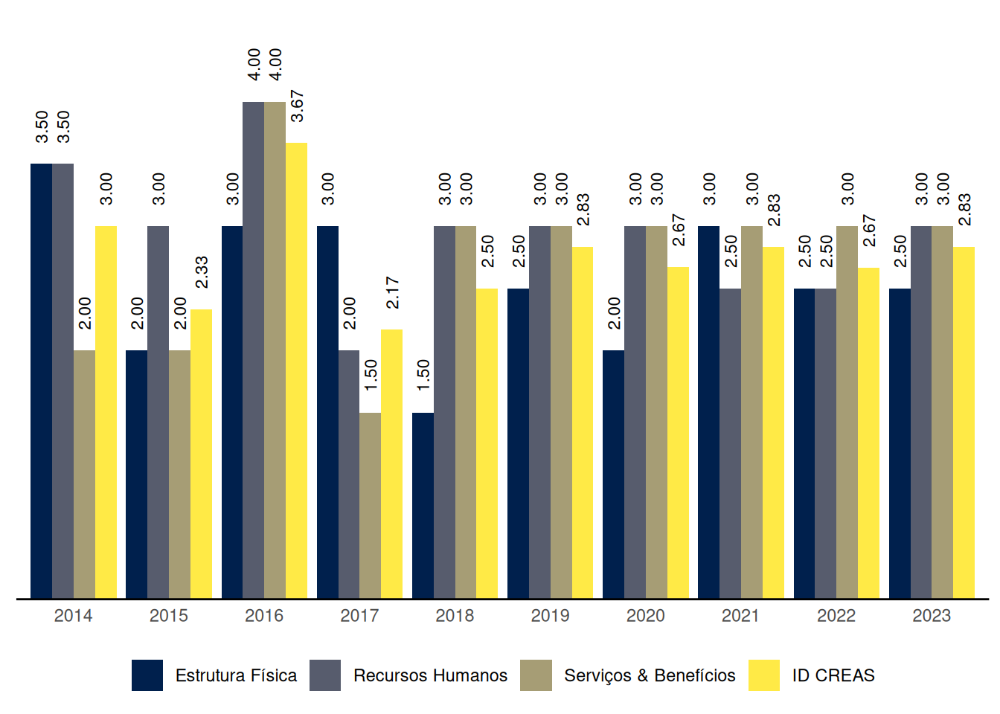

São Vicente
Relatório de Indicadores Censo SUAS 2023 do município de São Vicente, São Paulo
1 ID CRAS: Índice de Desenvolvimento do CRAS
O ID CRAS é um indicador sintético que retrata o grau de desenvolvimento do CRAS. Ele é composto por três dimensões: Estrutura Física, Recursos Humanos e Serviços & Benefícios. Em cada dimensão é atribuída uma nota de 1 a 5 de acordo com critérios indicativos do nível de desenvolvimento do CRAS, sendo 5 o nível máximo de desenvolvimento. O ID CRAS é a média das notas alcançadas nas três dimensões.
O Gráfico 1 mostra a evolução das médias do ID CRAS ao longo dos anos no município de São Vicente, São Paulo.

| Capacidade de até: | Quantidade |
|---|---|
| 2.500 famílias referenciadas | 0 |
| 3.500 famílias referenciadas | 0 |
| 5.000 famílias referenciadas | 5 |
As seções a seguir apresentam os resultados do município de São Vicente em cada uma das dimensões do ID CRAS, bem como os requisitos para se alcançar os níveis superiores.
1.1 ID CRAS: Dimensão Estrutura Física
1.1.1 CRAS com capacidade de referenciamento para até 2.500 ou 3.500 famílias
São Vicente não tem CRAS com capacidade de referenciamento para até 2.500 ou 3.500 famílias.
1.1.2 CRAS com capacidade de referenciamento para até 5.000 famílias
Na dimensão Estrutura Física, o nível de ID dos CRAS com capacidade de referenciamento para até 5.000 famílias no município de São Vicente varia de 1 a 4.
O CRAS de nível 1, com capacidade de referenciamento para até 5.000 famílias, na dimensão Estrutura Física:
- Possui menos de 3 salas de atendimento; ou
- Não possui banheiro; ou
- Funciona em prédio compartilhado com ONG, ou com compartilhamento de todas as salas de atendimento.
Para alcançar o nível 2 na dimensão Estrutura Física, o CRAS com capacidade de referenciamento para até 5.000 famílias precisa:
- Possuir no mínimo 3 salas de atendimento; e
- Possuir pelo menos 1 banheiro.
Para alcançar o nível 3 na dimensão Estrutura Física, o CRAS com capacidade de referenciamento para até 5.000 famílias precisa, além dos requisitos do nível 2:
- Possuir recepção; e
- Possuir pelo menos 1 das salas de atendimento com capacidade para 15 ou mais pessoas; e
- Possuir acessibilidade, ao menos parcial.
Para alcançar o nível 4 na dimensão Estrutura Física, o CRAS com capacidade de referenciamento para até 5.000 famílias precisa, além dos resquisitos do nível 3:
- Possuir no mínimo 4 salas de atendimento (sendo pelo menos 1 com capacidade para 15 ou mais pessoas); e
- Possuir no mínimo 2 banheiros; e
- Possuir pelo menos 2 computadores conectados à internet.
Para alcançar o nível 5 na dimensão Estrutura Física, o CRAS com capacidade de referenciamento para até 5.000 famílias precisa, além dos requisitos do nível 4:
- Possuir no mínimo 1 sala administrativa; e
- Possuir acessibilidade; e
- Possuir conjunto de equipamentos que inclua, no mínimo: 3 computadores conectados à internet, impressora, telefone e veículo exclusivo ou compartilhado.
1.2 ID CRAS: Dimensão Recursos Humanos
1.2.1 CRAS com capacidade de referenciamento para até 2.500 famílias
São Vicente não tem CRAS com capacidade de referenciamento para até 2.500 famílias.
1.2.2 CRAS com capacidade de referenciamento para até 3.500 famílias
São Vicente não tem CRAS com capacidade de referenciamento para até 3.500 famílias.
1.2.3 CRAS com capacidade de referenciamento para até 5.000 famílias
Na dimensão Recursos Humanos, o nível de ID dos CRAS com capacidade de referenciamento para até 5.000 famílias no município de São Vicente é 5.
O CRAS de nível 5, com capacidade de referenciamento para até 5.000 famílias, na dimensão Recursos Humanos:
- Possui no mínimo 9 (13, se EV) profissionais, sendo pelo menos 5 (7, se EV) com nível superior; e
- Possui no mínimo 2 Assistentes Sociais (3, se EV) e 1 Psicólogo; e
- Possui no mínimo 2 profissionais de nível superior com vínculo estatutário ou empregado público celetista; e
- Possui coordenador com nível superior.
1.3 ID CRAS: Dimensão Serviços & Benefícios
Na dimensão Serviços & Benefícios, o nível de ID dos CRAS no município de São Vicente varia de 1 a 3.
O CRAS de nível 1 na dimensão Serviços & Benefícios em município de porte Grande:
- Não realiza alguma(s) das seguintes atividades essenciais do PAIF: acompanhamento de famílias, e/ou grupo/oficina com famílias, e/ou visitas domiciliares, e/ou orientação; ou
- Possui articulação frágil ou inexistente com os Serviços de Educação, com os Serviços de Saúde e com os CREAS; ou
- Não possui profissionais de Serviço Social nem de Psicologia.
Para alcançar o nível 2 na dimensão Serviços & Benefícios, o CRAS em município de porte Grande precisa:
- Executar o PAIF, realizando no mínimo as seguintes atividades: acompanhamento de famílias, grupo/oficina com famílias e visitas domiciliares; e
- Possuir forte articulação com pelo menos um dos seguintes Serviços: Serviços de Educação, Serviços de Saúde e CREAS.
Para alcançar o nível 3 na dimensão Serviços & Benefícios, o CRAS em município de porte Grande precisa, além dos requisitos do nível 2:
- Executar o PAIF realizando orientação/acompanhamento para inserção no BPC, além das atividades exigidas para o nível 2; e
- Possuir oferta de Serviço de Convivência pelo menos para um ciclo de vida (oferta direta do CRAS ou por meio de unidades a ele referenciadas); e
- Possuir forte articulação com o(s) CREAS e com os Serviços de Educação e Saúde no território.
Para alcançar o nível 4 na dimensão Serviços & Benefícios, o CRAS em município de porte Grande precisa, além dos requisitos do nível 3:
- Ter quantidade média de famílias em acompanhamento no mês, dividida pela equipe técnica (Assistentes Sociais e Psicólogos) não inferior a 20 nem superior a 100; e
- Executar o PAIF realizando palestras, campanhas ou eventos comunitários e acompanhamento dos encaminhamentos realizados, além das atividades exigidas para o nível 3; e
- Possuir oferta de Serviço de Convivência para no mínimo dois ciclos de vida (oferta direta do CRAS ou por meio de unidades a ele referenciadas); e
- Funcionar no mínimo 5 dias por semana e 40 horas semanais.
2 ID CREAS: Índice de Desenvolvimento do CREAS
O ID CREAS é um indicador sintético que retrata o grau de desenvolvimento do CREAS. Ele é composto por três dimensões: Estrutura Física, Recursos Humanos e Serviços & Benefícios. Em cada dimensão é atribuída uma nota de 1 a 5 de acordo com critérios indicativos do nível de desenvolvimento do CREAS, sendo 5 o nível máximo de desenvolvimento. O ID CREAS é a média das notas alcançadas nas três dimensões.
O Gráfico 3 mostra a evolução das médias do ID CREAS ao longo dos anos no município de São Vicente, São Paulo.


As seções a seguir apresentam os resultados do município de São Vicente em cada uma das dimensões do ID CREAS, bem como os requisitos para se alcançar os níveis superiores.
2.1 ID CREAS: Dimensão Estrutura Física
Na dimensão Estrutura Física, o nível de ID dos CREAS no município de São Vicente varia de 2 a 3.
O CREAS de nível 2 na dimensão Estrutura Física em município de porte Grande:
- Possui no mínimo 3 salas (atendimento e/ou administrativa); e
- Possui no mínimo 1 banheiro.
Para alcançar o nível 3 na dimensão Estrutura Física, o CREAS em município de porte Grande precisa, além dos requisitos do nível 2:
- Possuir recepção; e
- Possuir acessibilidade, ao menos parcial.
Para alcançar o nível 4 na dimensão Estrutura Física, o CREAS em município de porte Grande precisa, além dos requisitos do nível 3:
- Possuir no mínimo 2 banheiros; e
- Possuir 1 ou mais computadores com Internet; e
- Possuir veículo próprio ou compartilhado; e
- Possuir 5 salas ou mais para atendimento.
2.2 ID CREAS: Dimensão Recursos Humanos
Na dimensão Recursos Humanos, o nível de ID dos CREAS no município de São Vicente é 3.
O CREAS de nível 3 na dimensão Recursos Humanos em município de porte Grande:
- Possui Coordenador com nível superior; e
- Tem quantidade total de trabalhadores (nível superior e médio) maior ou igual a 10, sendo no mínimo 5 deles de nível superior; e
- Tem quantidade total de Assistentes Sociais, mais Psicólogos, maior ou igual a 4, sendo obrigatória a presença de profissionais destas duas áreas.
Para alcançar o nível 4 na dimensão Recursos Humanos, o CREAS em município de porte Grande precisa, além dos requisitos do nível 3:
- Possuir no mínimo 1 Advogado; e
- Ter no mínimo 6 trabalhadores de nível superior.
2.3 ID CREAS: Dimensão Serviços & Benefícios
Na dimensão Serviços & Benefícios, o nível de ID dos CREAS no município de São Vicente é 3.
O CREAS de nível 3 na dimensão Serviços & Benefícios em município de porte Grande:
- Oferta o PAEFI assegurando a realização, pelo menos, das seguintes atividades: Entrevistas de acolhida para avaliação inicial dos casos, Atendimento psicossocial individual/familiar, Construção de Plano Individual e/ou Familiar de atendimento, Visitas domiciliares e Elaboração de relatórios técnicos sobre casos em acompanhamento; e
- Possui forte articulação com o CRAS e com o Conselho Tutelar; e
- Oferta atendimento para variadas situações de violência ou violação de direitos e para os diferentes ciclos de vida; e
- Oferta o Serviço de MSE.
Para alcançar o nível 4 na dimensão Serviços & Benefícios, o CREAS em município de porte Grande precisa, além dos requisitos do nível 3:
- Ofertar o PAEFI assegurando a realização da atividade de Atendimento psicossocial em grupo (além da realização das atividades exigidas no nível 3); e
- Ter quantidade média de casos em acompanhamento no mês, dividida pela equipe técnica (AS + PSI) menor ou igual a 50 casos; e
- Ofertar o Serviço de MSE assegurando a elaboração do Plano Individual de Atendimento (PIA) do adolescente; e
- Ofertar o Serviço de Abordagem ou ter o Serviço referenciado.